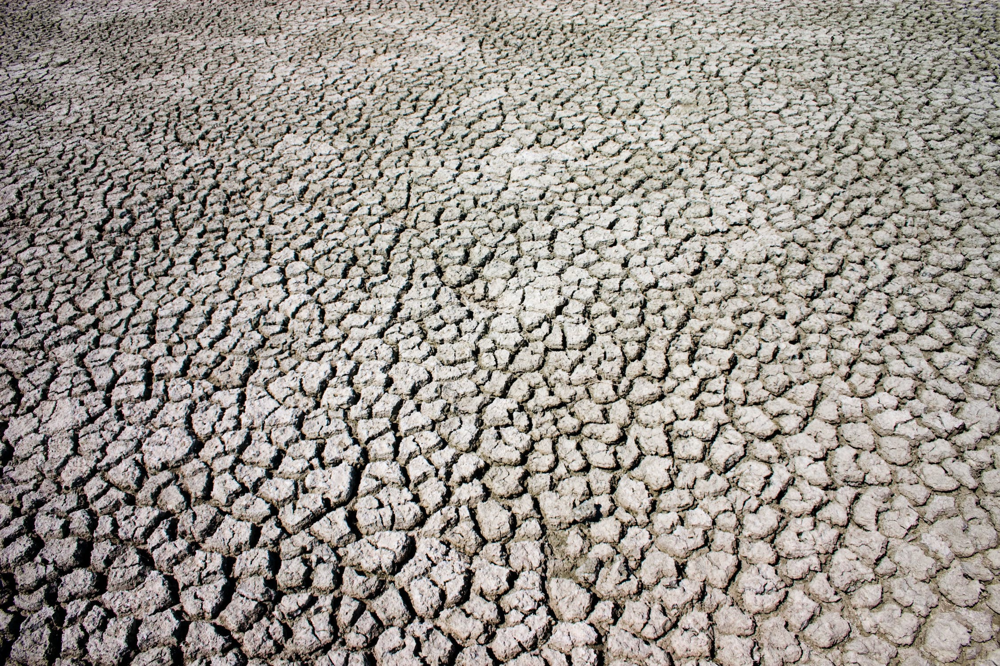
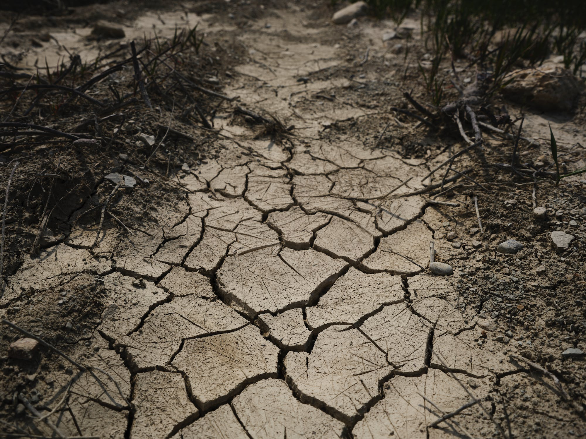
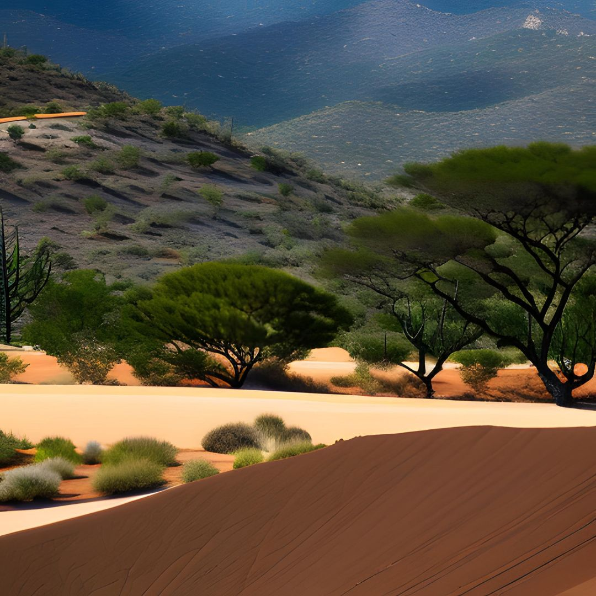

Desertification poses a grave environmental challenge that affects numerous regions worldwide. This phenomenon occurs when previously fertile and productive land degrades and transforms into arid expanses, rendering it unfit for cultivation. While desertification can arise naturally, human activities, such as deforestation, overgrazing, and unsustainable land use, significantly aggravate the problem. In this article, we will delve into the adverse impacts of desertification on the environment, society, and economy, along with exploring preventive measures.
Biodiversity Loss: Desertification ranks high among the leading causes of biodiversity decline. As it unfolds, numerous plant and animal species, ill-equipped to adapt to harsh desert conditions, face extinction. This loss of biodiversity reverberates across ecosystems, disrupting their balance and resilience to natural disasters like floods and droughts.
Food Insecurity: Desertification reduces the availability of arable land, directly impacting food security. For countless individuals worldwide, agriculture serves as the lifeline for sustenance. Yet, with land degradation, crop yields decline, posing significant challenges to food production. The consequences encompass famine, malnutrition, and even fatalities, particularly in developing countries.
Economic Ramifications: Desertification carries substantial economic losses. Diminishing fertility levels in the land reduce agricultural productivity, directly affecting the income of farmers and agricultural enterprises. This downward spiral can trigger unemployment, poverty, and migration to urban areas, exacerbating social and economic issues.
Environmental Degradation: Desertification contributes to overall environmental deterioration. It leads to soil infertility, erosion, and the release of greenhouse gases, intensifying the impact of climate change and amplifying the risk of desertification itself.
Sustainable Land Management: Implementing sustainable land management practices, such as agroforestry, crop rotation, and conservation agriculture, can help restore soil fertility and minimize erosion. These approaches embrace sustainable agricultural methods that focus on nurturing healthy soils, preserving natural resources, and fostering biodiversity.
Reforestation: The strategic planting of trees represents an effective measure to combat desertification. Trees play a crucial role in stabilizing soil, reducing erosion, and enhancing fertility. Moreover, they absorb carbon dioxide from the atmosphere, contributing to the mitigation of climate change.
Conservation Efforts: Conserving vital resources like water and wildlife holds the key to maintaining ecosystem equilibrium and preventing desertification. Protecting wetlands, rivers, and other water sources from pollution and overuse, while preserving habitats for endangered species, are critical components of these conservation endeavors.
Sustainable Agricultural Practices: Embracing sustainable agricultural practices, including crop rotation, intercropping, and the use of organic fertilizers, helps maintain soil fertility and boost crop yields. These approaches minimize reliance on chemical fertilizers and pesticides, which can harm the environment and human health.
Education and Awareness: Raising awareness about the detrimental effects of desertification and advocating for sustainable land management practices can drive behavioral change and contribute to prevention efforts. Educating individuals about the importance of conserving natural resources, protecting biodiversity, and embracing sustainable agricultural practices plays a crucial role in this regard.
Desertification stands as a pressing environmental issue, negatively impacting biodiversity, food security, the economy, and the environment. To combat this challenge, it is imperative to prioritize sustainable land management practices, reforestation, conservation efforts, sustainable agricultural practices, as well as education and awareness campaigns. By joining forces to prevent desertification, we can pave the way for a sustainable future for generations to come. Let us remember that the decisions we make today will shape the world we inhabit tomorrow.